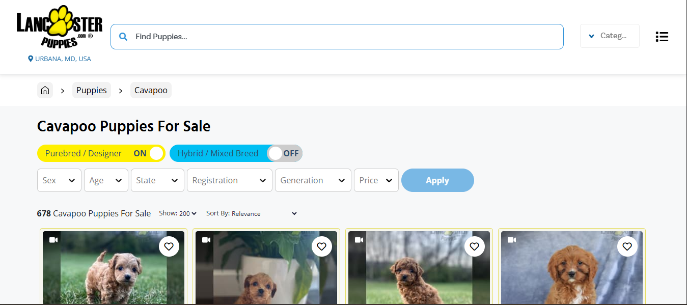

March 2020
We came across Oreo (back then he was Echo)
on the Lancaster website. The breeders were
mennonite farmers in PA; not only was the house
clean when we got there, but little Echo was playing
with his siblings comfortably. We made a few visits to see
him, with each visit asking the breeders more questions